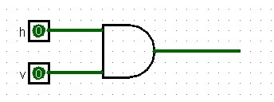
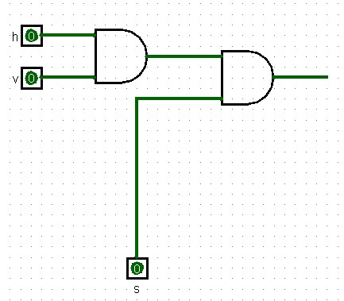
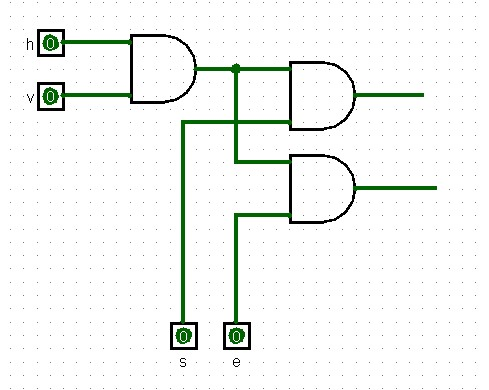
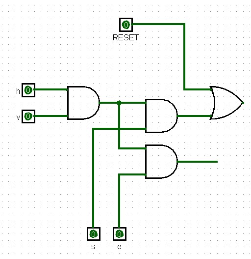
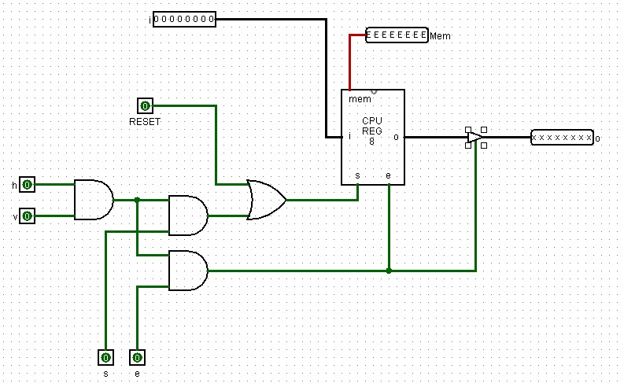
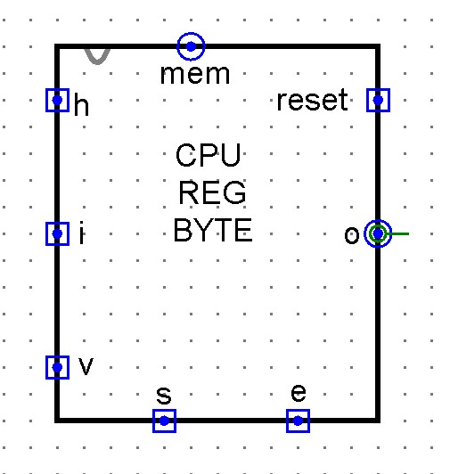

The Addressable Byte
Sections 8.1 – 8.3 | Estimated time: ~0.7 hours
8.1 Four registers and a hundred numbers
What you have. A register that holds a byte and can let go of a shared wire. Decoders that turn an n-bit number into one selected line. A finished ALU. In MIPS, programs that compute, decide, loop and call procedures.
What you cannot do. Keep more than a handful of values. The CPU you are building will have four working registers. MIPS has thirty-two, and a third of those are spoken for. Write int scores[100]; in C and neither machine has anywhere to put it.
And there is a second, quieter gap. Every operand in every instruction you have written so far is a register named in the source: $t0, $s1. Nothing lets a program say “the storage location whose number I just computed”. An array needs exactly that — scores[i] is a place chosen at run time.
What you can do by the end of this week. Build 256 bytes of addressable memory, of which you will populate 32, out of registers you already have, two decoders you already have, and one register to hold the address. And write MIPS that loads from and stores to memory, walks arrays and reads text.
Both halves turn out to need the same thing: a number that means a place. In hardware it is an address that lights up one byte. In MIPS it is a base register plus an offset. Page 3 shows they are literally the same number.
8.2 What you already own
Checkpoint 3 is the largest circuit you have built so far, and most of it is already in your file:
| Component | How many | You built it in | Used here as |
|---|---|---|---|
REGISTER_8BIT | 32 | Week 5 | the storage inside every byte |
DECODER_4TO16 | 2 | Week 3 | row select and column select |
MEM_8BIT | 1 | Week 5 | the Memory Address Register |
What is new is two tabs: RAM_BYTE on this page — one register with four gates and a buffer around it — and RAM_16X16 on page 2, which is 32 copies of it, the two decoders and the address register, wired together.
If you look at older notes for this circuit, you may find an instruction to add a controlled buffer to the output of your 8-bit register before building RAM. Yours already has it — it is the ninth buffer from Week 5, the one that looks redundant and is not. Adding another gives you a tenth. Use REGISTER_8BIT exactly as it is.
Step 5 below does add one controlled buffer — but in the new RAM_BYTE tab, after an instance of your register. Nothing inside REGISTER_8BIT changes.
8.3 The addressable byte
A register stores a byte whenever its s is high and drives its output whenever its e is high. Put thirty-two of them side by side, run one s wire to all of them, and a single write stores the same byte thirty-two times. What each byte needs is a way to know whether this particular write is meant for it.
That is the whole job of RAM_BYTE. It gets two select lines from outside — h from the row it sits in and v from the column — and it passes s and e through to its register only when both are high. Five small steps build it.
-
Am I selected?
One two-input AND:
sel = h AND v. Page 2 arranges for exactly one byte in the whole RAM to have both lines high at once.
The selector gate. -
Write only if selected.
A second AND:
sel AND s. The shared write line reaches every byte, and only the selected one lets it through.
Gating the write. -
Read only if selected.
A third AND, from the same selector:
sel AND e. Same idea for the read line.
Gating the read. -
Add
reset.An OR after the write gate:
set = (sel AND s) OR reset. Whenresetis high, this byte’s register is written whether or not it is selected.
The reset path. -
Wire in the register, and a buffer on its output.
setto the register’ss;sel AND eto the register’seand to the control of one 8-bit controlled buffer on the register’so. The register’s monitor output becomes this byte’smem.
The finished RAM_BYTE. The block labelled “CPU REG 8” is yourREGISTER_8BIT. This figure labels the register’s top pinmem; yours is calledreg— do not rename it. The byte’s own monitor output is the one calledmem.
Three things this circuit does that are easy to get wrong
reset writes whatever is on i. It is not a “clear”.The name suggests zeroing, and that is how you will usually use it. But look at the circuit: reset is ORed into the write line, so it writes i into this byte. On page 2, reset reaches all 32 bytes at once — so it is a broadcast write. Hold i at 00000000 and pulse it, and memory is cleared. Hold i at 11111111 and every byte fills with ones. Leave i at whatever you last typed, and that is what all 32 bytes now hold.
EEEEEEEE, and that is correctWeek 5 showed that a freshly placed MEM_1BIT reads E until it is first written. A RAM_BYTE is eight of them, and your 32-byte RAM is 256 of them. You will see a lot of red. Nothing is broken: write the byte, or pulse reset with i = 00000000, and it clears for good. That is the first thing to do with a new RAM.
On paper, the buffer in step 5 does nothing. Your register’s o already floats whenever its e is low, and its e is the same signal that controls the buffer. It is part of the RAM as Dave built and ran it in Logisim 2.7.1, and it stays — the same decision, and the same kind of decision, as the ninth buffer inside your register. That is a description of what has worked in this simulator, not a diagnosis of why.
The interface — tab RAM_BYTE
| Pin | Width | Direction | Position | Meaning |
|---|---|---|---|---|
h | 1 | in | left | row select |
i | 8 | in | left | data in |
v | 1 | in | left | column select |
s | 1 | in | bottom | write — pull-down |
e | 1 | in | bottom | read — pull-down |
reset | 1 | in | right | write i regardless of selection — pull-down |
o | 8 | out | right | data out — driven only when selected and e = 1 |
mem | 8 | out | top | the stored byte, always visible |

Where you are
Build RAM_BYTE now and test it on its own with the poke tool, the way the bench above does: select it, write it, deselect it, try to write it again, read it back. Page 2 places 32 of these and supplies their h and v from an 8-bit address.